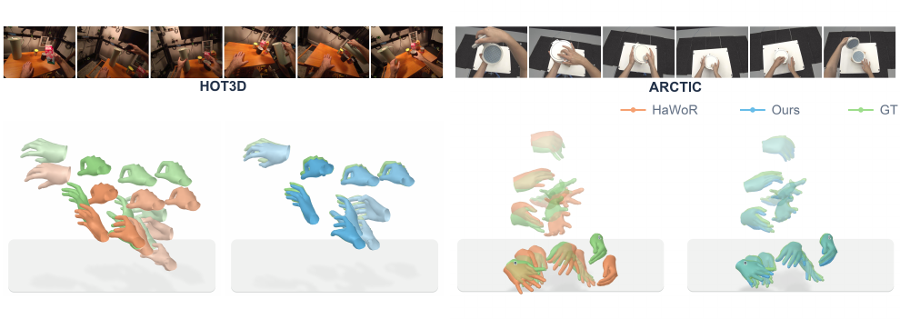

Geometry meets motion
MetricHand
Geometry-Aware Flow Matching for
4D Hand Reconstruction in Metric World Space
Figure 1



The approach
Geometry conditions every step.
Depth priors from hand–object interaction regions provide metric cues for localization and articulated temporal reconstruction.

Qualitative Results
HOT3D and ARCTIC comparisons.
12 comparison videos
Quantitative Results
Dataset
HOT3D
Camera-space and world-space hand reconstruction
| Method | Camera | World | ||||||
|---|---|---|---|---|---|---|---|---|
| MPJPE | RA-MPJPE | PA-MPJPE | WristErr | ABS-W-MPJPE | W-MPJPE | WA-MPJPE | Accel. | |
| HaMeR-SLAM | 67.87 | 58.23 | 9.57 | 52.29 | 73.28 | 148.23 | 38.43 | 15.91 |
| WiLoR-SLAM | 53.78 | 16.58 | 6.70 | 48.89 | 59.21 | 75.90 | 24.65 | 11.39 |
| HMP-SLAM | 73.44 | 62.89 | 11.70 | 59.54 | 78.77 | 152.00 | 40.31 | 7.39 |
| Dyn-HaMR | 66.06 | 55.46 | 9.19 | 49.98 | 274.08 | 207.97 | 67.98 | 8.85 |
| HaWoR | 16.97 | 12.65 | 5.77 | 14.99 | 28.88 | 41.09 | 15.47 | 5.57 |
| HandFlow | 34.89 | 14.26 | 5.23 | 31.45 | 42.59 | 63.27 | 22.56 | 8.63 |
| ACE-EgoHand (known-K) | 113.92 | 16.19 | 5.31 | 102.06 | 118.43 | 55.95 | 20.24 | 4.13 |
| ACE-EgoHand (K-free) | 118.66 | 15.35 | 5.66 | 110.66 | 122.61 | 98.49 | 31.12 | 6.03 |
| MINT | 66.47 | 22.68 | 8.50 | 70.49 | 197.46 | 111.93 | 41.83 | 10.98 |
| Ours | 8.60 | 5.84 | 3.18 | 7.72 | 20.58 | 26.71 | 9.00 | 3.11 |
| Gain vs. 2nd | 49.3% | 53.8% | 39.2% | 48.5% | 28.7% | 35.0% | 41.8% | 24.7% |
Dataset
ARCTIC
Camera-space and world-space hand reconstruction
| Method | Camera | World | ||||||
|---|---|---|---|---|---|---|---|---|
| MPJPE | RA-MPJPE | PA-MPJPE | WristErr | ABS-W-MPJPE | W-MPJPE | WA-MPJPE | Accel. | |
| HaMeR-SLAM | 54.56 | 25.67 | 9.68 | 56.05 | 166.19 | 83.51 | 31.21 | 17.14 |
| WiLoR-SLAM | 36.23 | 14.23 | 6.18 | 34.56 | 152.89 | 68.80 | 31.39 | 21.62 |
| HMP-SLAM | 95.82 | 32.63 | 11.89 | 100.61 | 199.30 | 99.51 | 37.31 | 9.38 |
| Dyn-HaMR | 50.56 | 25.20 | 9.87 | 50.12 | 671.54 | 160.91 | 41.91 | 11.59 |
| HaWoR | 37.26 | 22.45 | 7.10 | 32.23 | 154.36 | 68.52 | 28.17 | 12.28 |
| ACE-EgoHand (known-K) | 56.57 | 12.04 | 7.30 | 57.56 | 160.71 | 54.66 | 24.25 | 6.76 |
| ACE-EgoHand (K-free) | 58.70 | 12.28 | 7.32 | 60.39 | 163.84 | 55.78 | 24.23 | 6.84 |
| MINT | 116.45 | 27.23 | 9.68 | 106.91 | 621.82 | 107.94 | 45.37 | 13.49 |
| Ours | 17.54 | 11.28 | 5.18 | 20.02 | 120.86 | 37.40 | 19.08 | 4.39 |
| Gain vs. 2nd | 51.6% | 6.3% | 16.2% | 37.9% | 20.9% | 31.6% | 21.3% | 35.1% |
1st 2nd 3rd. Position errors: mm. Acceleration error: m/s². Lower is better.